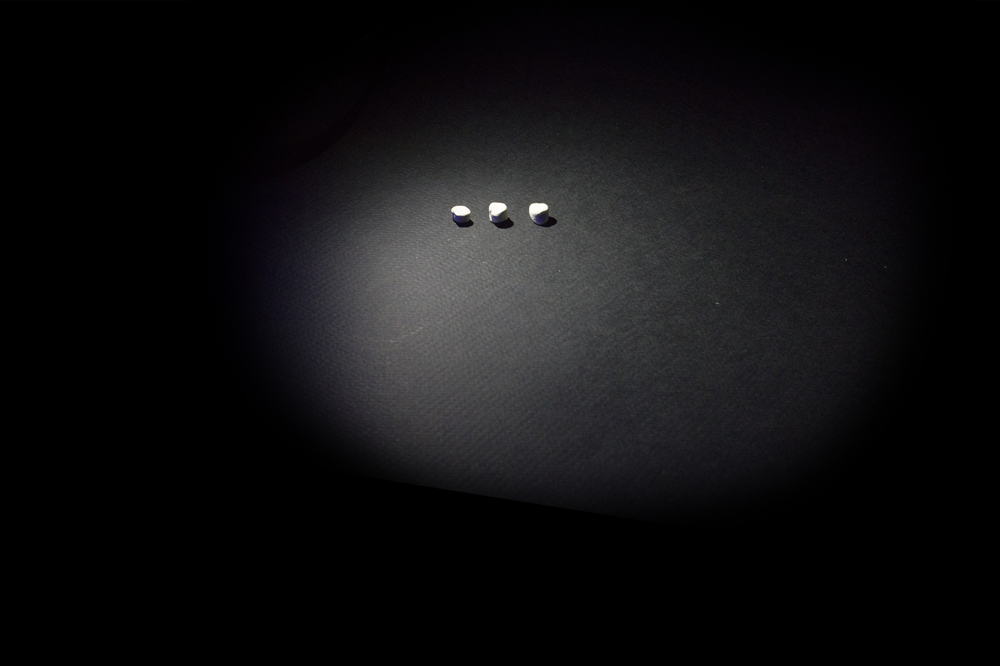
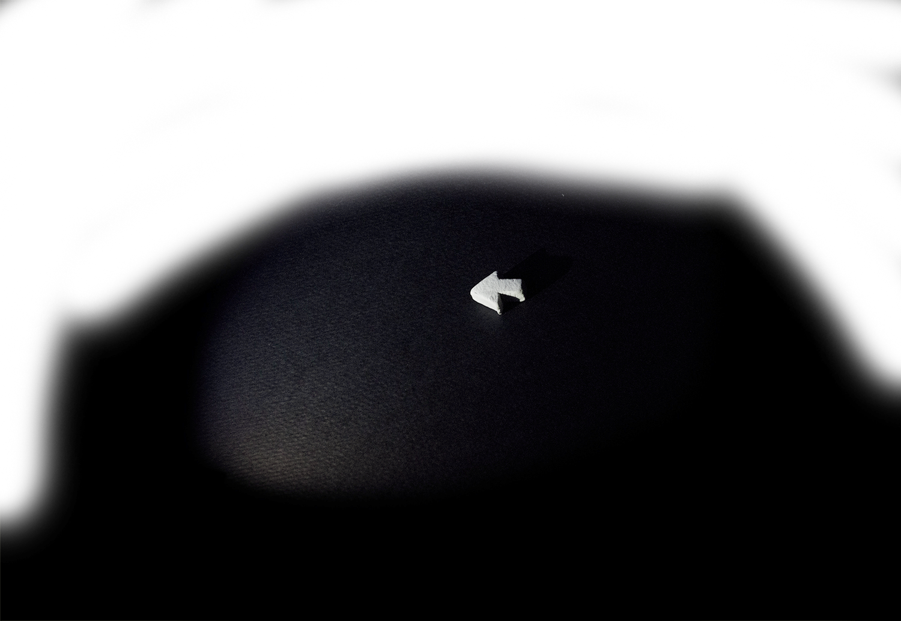
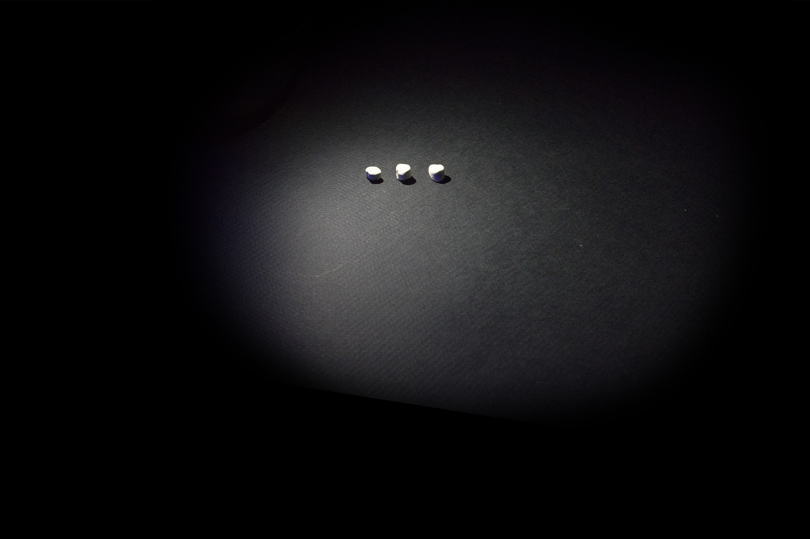
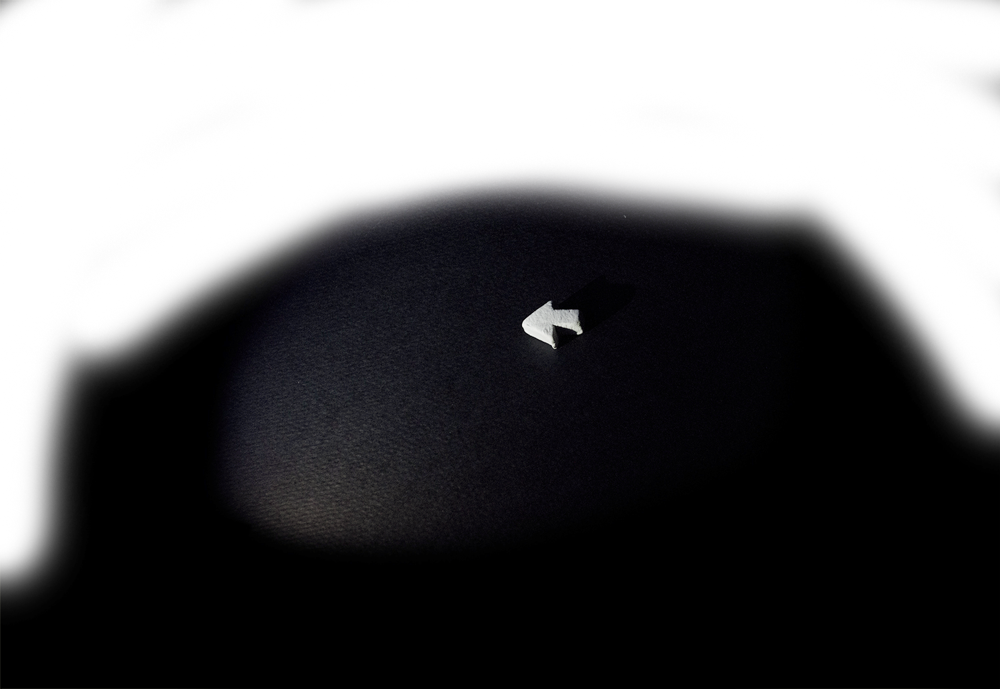
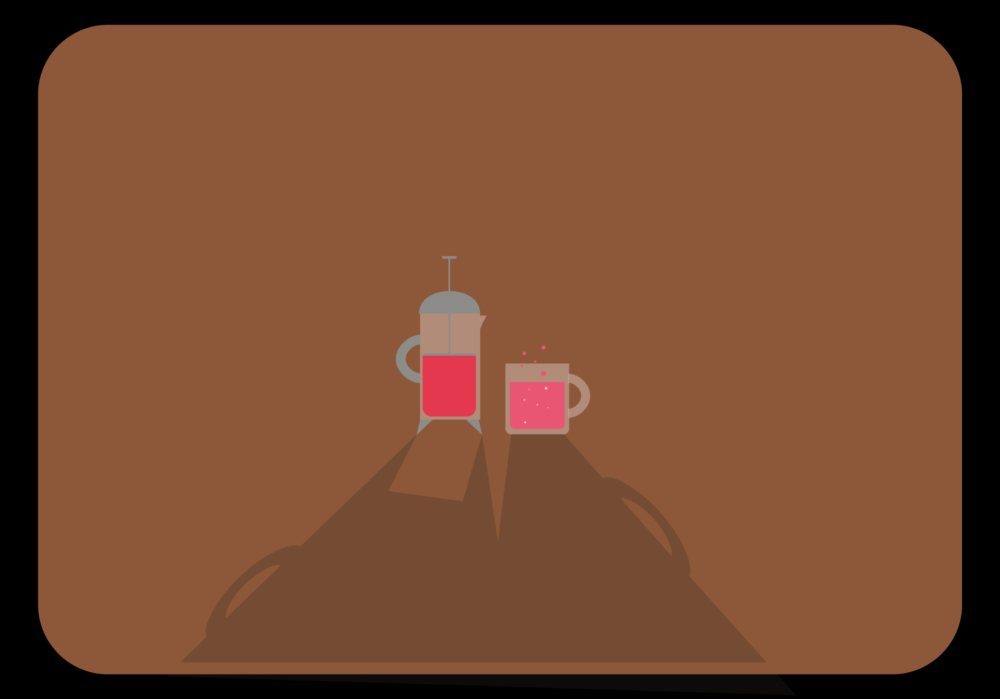
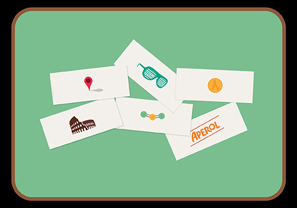
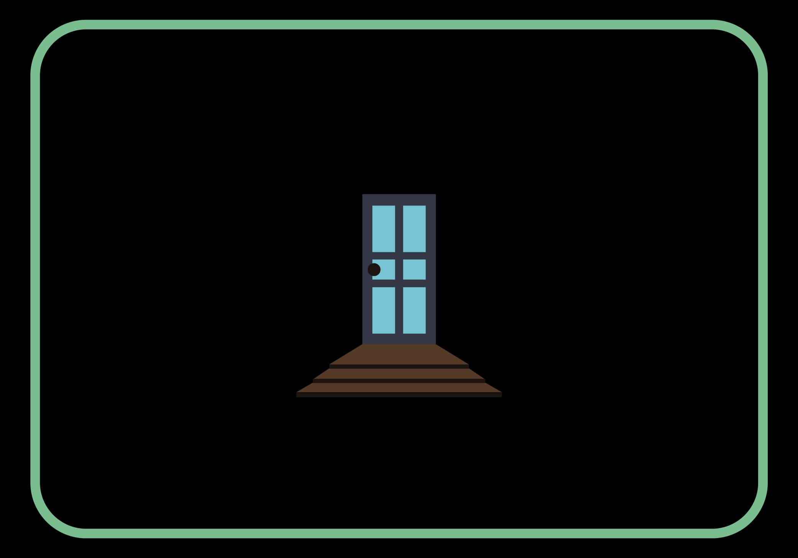
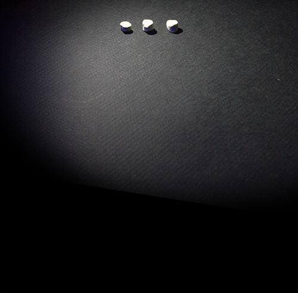

chef
“Dinner 5.14.16” 2016
Grant Achatz (of Alinea in Chicago) has a dish called “Pheasant, Shallot, Cider, Burning Oak Leaves”. It’s a single bite encased in tempura batter, eaten directly off a small oak branch, smoldering leaves attached. By many accounts, the smell of the leaves brings up memories of autumn in the midwest, effectively seasoning the dish with emotion. Cheesy, I know, but this is the most exciting food, to me: it expresses palpable ideas and feelings.
My girlfriend, Nora, spent her first year of college in Italy. It was a nightmare. But, like any other, it ended; and with that in sight, I decided to put together a dinner in celebration of her return. The process of creating the menu was a writing process: involving lots of 3x5 cards, sprawling conjecture in my notebook, and pensive walks in nature. It was also a logistics nightmare: it’s very difficult for one person to serve upwards of ten courses to six people. The menu was conceived with room for several make-ahead components, so I began cooking four days before the meal. Below is my best shot at recreating it.
  
Dinner 5.14.16
Some photos are missing because the photographer was too eager to dig in, which I take as a compliment. The wonder of Alinea and other restaurants like it comes in their ability to reach people in such an intimate way, even though they have never met them before. The ultimate goal is to evoke universal ideas and feelings - that’s the skill the great Chefs have honed in on. Deliciousness should be a foregone conclusion. Below are a few lesser, but still elaborate, cooking projects I’ve taken on in the past year.
